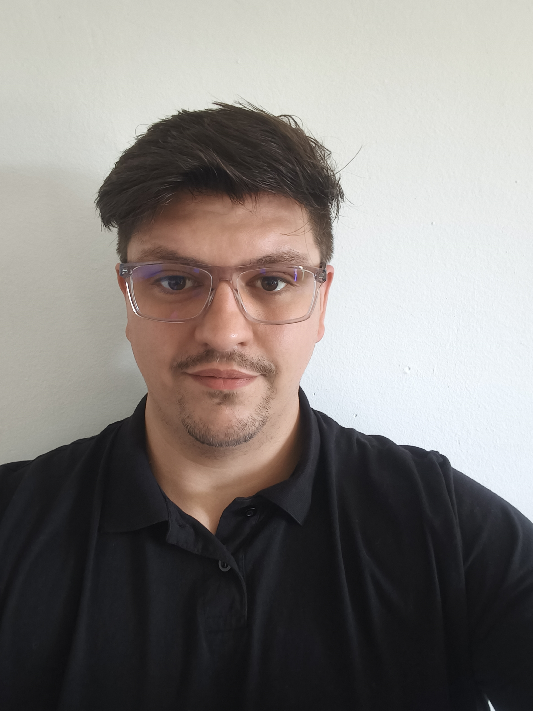

Vítám vás v mém životopise
Osobní údaje
- Jméno: Marek Očenáš
- Věk: 28 let
- Stav: svobodný

Něco o mně
Studoval jsem střední školu s maturitou, obor Kuchař.
V současnosti se učím základy programování a absolvuji online kurz na Udemy.
Zatím pracuji hlavně s HTML, CSS a JavaScriptem.
V portfoliu ukazuji své první jednodušší projekty, na kterých se postupně učím praxi.
Pracovní zkušenosti
- Hotel Turiec – 2013 až 2016, školní praxe na pozici kuchař
- Brněnská televize (BTV) – 2016 až 2017, kameraman a střihač televizních novin
- Restaurace u Raka – 2017 až 2018, číšník, později šéfkuchař
- Tabák Černopolní – 2018 až 2020, vedoucí trafiky a pobočky PPL
- Bar na Osmičce / Bistro na Osmičce – 2020, hlavní číšník a barman
- Gebauer & Griller, Mikulov – únor 2021 až duben 2022, operátor manuální výroby, později inspektor kvality výroby
- SuperZoo Brno-Komárov – 2023, vedoucí směny
- PH Diamond Caffe – 2023 až 2024, manažer a obchodní zástupce kaváren, správa e-shopu Dottore del Caffè
- VELKÁ PECKA s.r.o. / Rohlík.cz – 2024 až 2025, oddělení VLS, vedoucí logistické směny, práce s logistickými systémy, automatizace inventur pomocí NFC čipů a skriptů v Google Apps Script, ukázka NFC inventury
- Restaurace No a Co s.r.o. – 2025 až nyní, moje vlastní restaurace, kterou jsem vedl jako majitel a provozní, včetně tvorby a správy firemní webové stránky
Dovednosti
- Základy webového vývoje (HTML, CSS)
- MS Office (Excel, Word)
- Nástroje Google (Google Sheets, Google Docs, Google Drive)
- Práce s AI nástroji (ChatGPT, Gemini)
- Nastavení e-shopů a marketplace platforem (Shoptet, Alza, Allegro, CIS)
- Trello
- Automatizace procesů (inventury, Google Apps Script, NFC čipy)
- Nastavení pokladních systémů a vzdáleného přístupu na prodejně
- Nastavování a správa e-shopu
- Tvorba a správa webových stránek pro firmu
- Základní komunikace v anglickém jazyce
- Zkušenosti s vedením týmu a provozním managementem
Tvoření webů pomocí AI
- Jednoduchý seznam úkolů – první menší projekt v HTML, CSS a JavaScriptu otevřít
- Jednoduché demo správy pokladen – ukázka přehledu pokladen a vzdálené kontroly otevřít
- Jednoduchá chatovací aplikace v Pythonu – procvičení socketů a komunikace klient-server otevřít
Ocenění a certifikáty
- Certifikát z online kurzu webového vývoje na Udemy.com
- Ocenění za nejlepší projekt v rámci rekvalifikačního kurzu barmanství